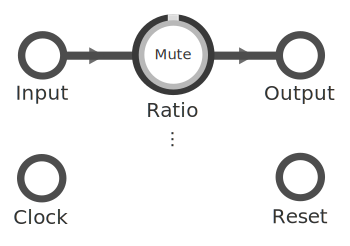

Synchronized mute.
Mute buttons that sync with the clock.
Input Input voltage for the row.
Output The output voltage if the mute is inactive for the row.
Mute When this button is pressed it indicates that you want this row muted. The voltage will be muted when the deisred ratio is met with the clock or immediatly based on the Ratio knob.
Ratio Specify the clock ratio you want to syncronize the mute with. From /32 to X32. By default it is set to immediatly.
Clock The clock cv input, by default the clock ticks every 2 seconds.
Reset Resets the internal clock values and triggers any waiting mutes when this is triggered.
